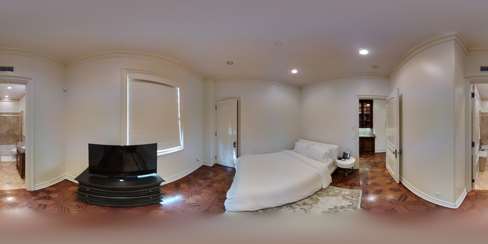
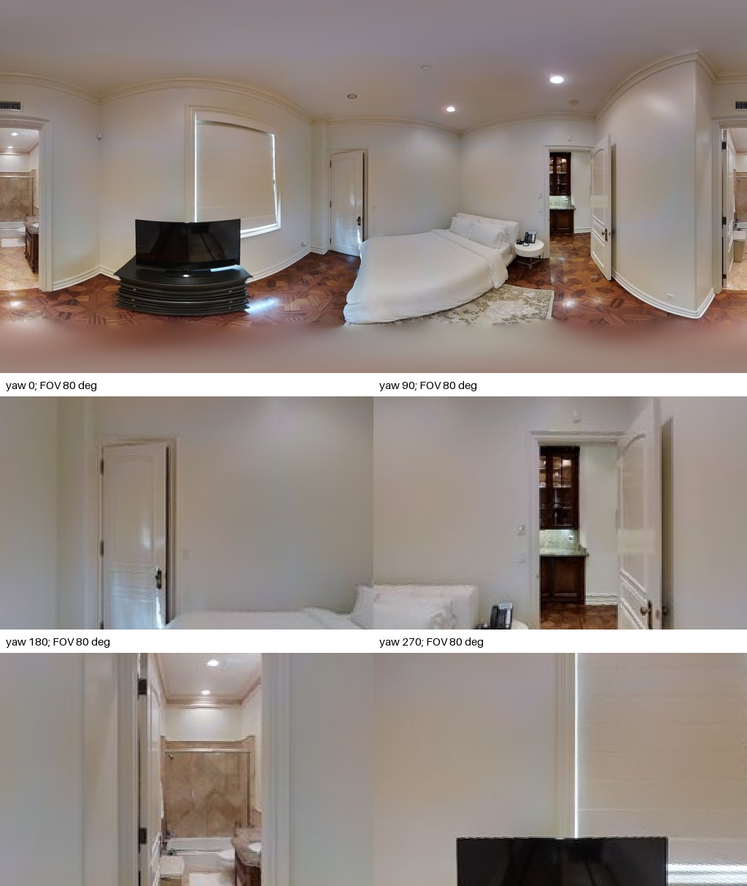
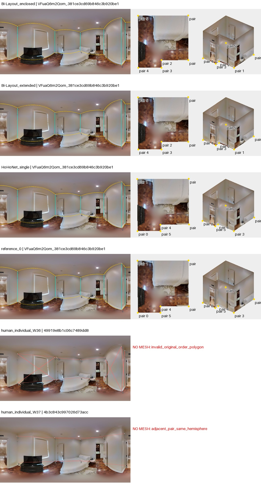
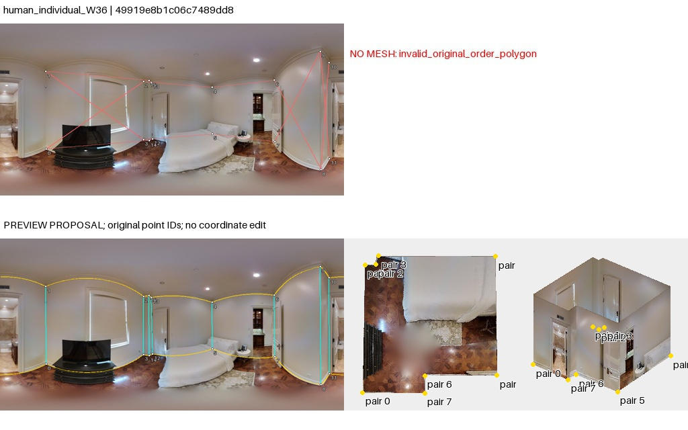

点序复查：旧失败图红线为脚本直连诊断，不是作者墙边证据。导出列表不等于已核实的邻接；重排仅是假设。50图核查与勘误
VFuaQ6m2Qom_381ce3cd69b846c3b920be16d29ed48e
AI建议；人工最终判断为空。先看原图，再展开布局。图中3D采用单位相机高度、单全景回投影；不是扫描真值。
原始PNG · 2048×1024；点击图片查看原尺寸。下面的旧拼图仅作概览。


小卧室，床和电视柜遮挡地脚，左右浴室/过道开门明显；墙顶线较清楚，范围闭合有门洞截断选择。
左窗原始几何，右窗为工具的约束拟合诊断；拟合结果不等于正确标注。无法读取的点组保留失败。高清显示升级未重新裁定旧观察。

Bi两头、HoHo和参考都保留床区边界凹进；两份人类原始序列分别自交和配对阻断。需先恢复可解释的显示顺序再讨论人类范围差异。
待人工判断：电视柜/床遮挡处的角点及两个人类点的配对如何对应？
04_human_individual_W36：visual_candidate_pending_human；卧室在门口有细小墙垛，床后下角不可见。W36重排后大体沿卧室外圈，可作为带保留意见的候选；门边密集点需逐个确认墙垛而非门扇。W37首先是点对读取失败，整组换序不能补救，未自动配对。

05_human_individual_W37：unresolved_no_proposal；原始失败叠图已阅读；无法仅用保守点序调整解决，未生成替代网格。